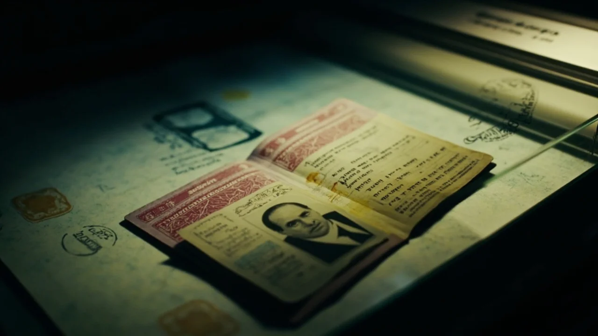
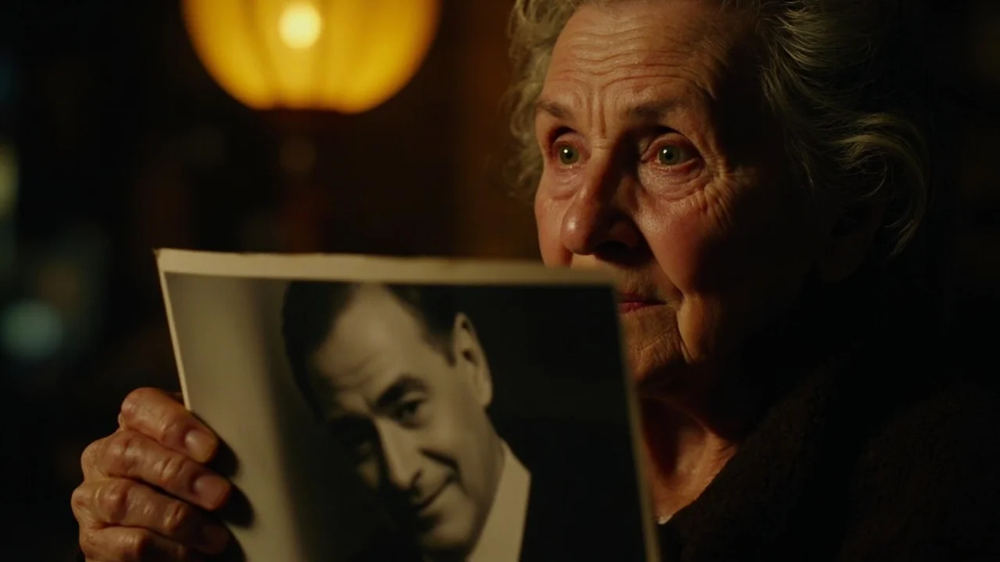
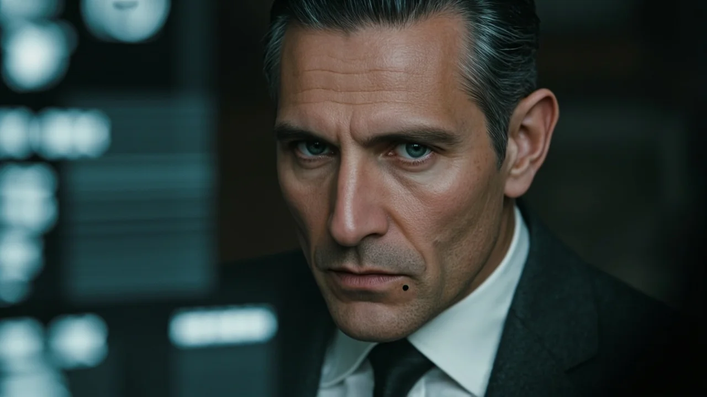
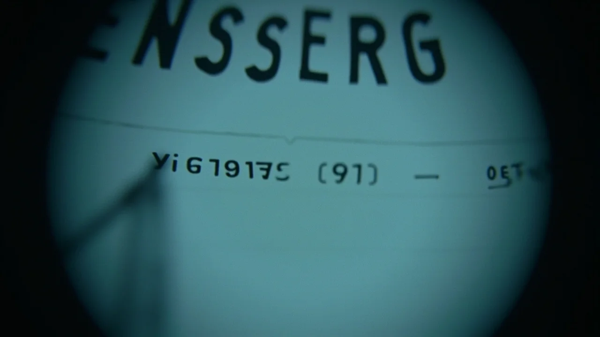
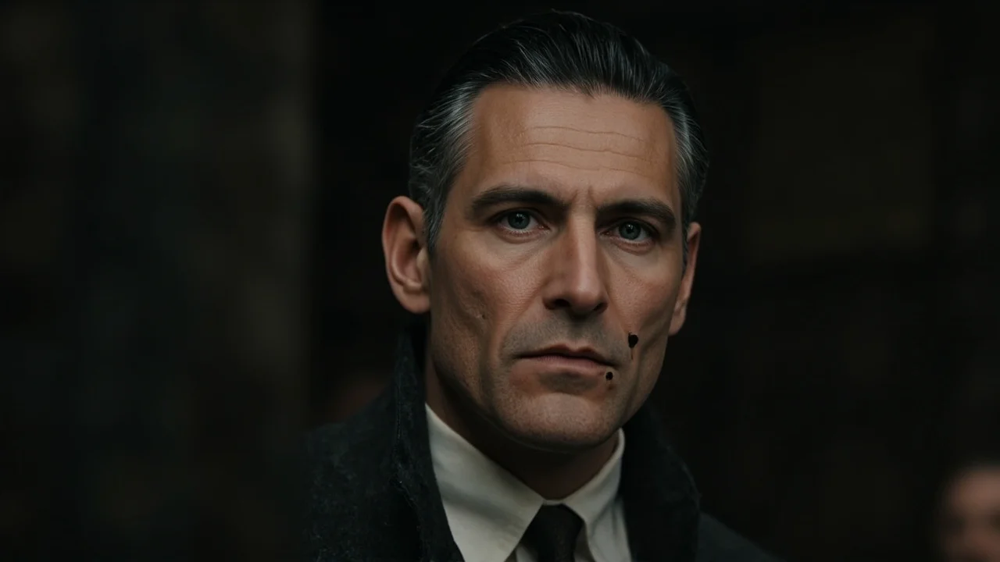

El cristal del escáner cenital zumbó bajo la lámpara del sótano. Nicolás levantó con pinzas el pasaporte caducado de doña Mercedes Ocaña, expedido en mil novecientos noventa y uno en Chamberí. La página tres conservaba los sellos secos del consulado en Tánger, pero en el recuadro de filiación no aparecía la mujer descrita en los timbres aduaneros.
Desde el plástico lo observaba un hombre de cuarenta y dos años, de mandíbula cuadrada, pelo oscuro peinado hacia atrás y chaqueta de paño gris. Tenía los ojos claros, casi incoloros bajo el brillo satinado, y una pequeña marca junto a la comisura del labio.
Nicolás se quitó las gafas y se frotó el puente de la nariz. El polvo de celulosa vieja flotaba en el aire del archivo, mezclado con el olor agrio a tóner. Volvió a colocar el documento bajo la lente, pulsó el pedal de captura y abrió en la pantalla la ficha siguiente del lote cuarenta y cuatro: el permiso de conducir de Dionisio Morales, un transportista jubilado nacido en mil novecientos treinta y tres.
Al ampliar la imagen, a Nicolás se le helaron los dedos sobre el ratón.
En el plástico rosa de Dionisio figuraba el mismo sujeto. La misma mandíbula ancha, las sienes plateadas y esa mirada fija que ignoraba la cámara oficial. El encuadre coincidía al milímetro: el hombro izquierdo caído, la solapa sobre el primer botón de la camisa blanca y el fondo neutro de pared encalada.
—Es una broma del taller —murmuró—. Metieron una imagen de prueba antes de indexar.
Buscó la carpeta física de Dionisio en la estantería de Bravo Murillo. La gestoría llevaba la testamentaría familiar y el legajo incluía la partida de nacimiento y la fotocopia del libro de familia. Dentro, el carnet original en blanco y negro, sellado con el cuño azul de la Dirección General de Seguridad, mostraba al mismo individuo de la chaqueta de paño. La tinta del tampón montaba sobre el cuello de la camisa. Era papel baritado de los años setenta, cortado a guillotina manual.
A las siete de la tarde, Nicolás cogió la línea uno de metro hasta Estrecho. La llovizna de noviembre barnizaba los adoquines con un brillo sucio. Subió la escalera de madera del número ochenta y dos hasta el cuarto B, donde una mujer octogenaria abrió la puerta sujeta por una cadena oxidada.
—¿Señora de Morales? Soy Nicolás Valverde, de la gestoría. Tenemos una duda administrativa con el carnet de don Dionisio.
La mujer examinó su credencial y le franqueó el paso. En el salón en penumbra dormitaba en un sillón orejero un anciano encorvado, calvo, de nariz aguileña y labios hundidos. Respiraba con un silbido áspero bajo una manta escocesa.
Nicolás sacó la copia de la fotografía.

—Al escanear el expediente apareció este retrato. Queremos comprobar si hubo un error al renovar el documento, porque este hombre...
La anciana sostuvo la cartulina bajo la lámpara de pie y sonrió con ternura quebrada.
—¿Error? Pero si es mi Dionisio. Igual que el día que nos prometimos en la ermita de San Isidro.
Nicolás se quedó helado. Miró al hombre decrépito del sillón, cuyos pómulos hundidos no guardaban la menor correspondencia con el retrato.
—Señora... el hombre de la foto tiene la mandíbula ancha, ojos claros y una señal junto a la boca.
—Es Dionisio —zanjó la mujer, con una calma que no admitía dudas—. Siempre tuvo esa cara. Cuando volvió del servicio militar en África trajo ese retrato para el salón. ¿Cómo no voy a conocer a mi marido después de cincuenta y cuatro años?
Nicolás guardó el papel con manos torpes y se despidió. Al bajar a la calle, el aire húmedo le golpeó la frente. La anciana no mentía: su memoria reconocía el rostro del desconocido con la misma certeza que el olor de su propia casa.
Al volver a la gestoría pasadas las nueve, las oficinas estaban desiertas. Solo en el departamento jurídico brillaba una lámpara. Valeria Ramos revisaba dos carpetas con una taza de café a un lado.
—Te hacía en casa, Nicolás —dijo sin levantar la vista—. Los del registro han vuelto a rebotar la escritura.
Nicolás colocó sobre la mesa el pasaporte de Mercedes, el carnet de Dionisio y un expediente de tutela de mil novecientos noventa y cuatro. En los tres documentos figuraba la misma cara. El hombre de cuarenta y dos años lo miraba desde el pasaporte de una mujer, desde el permiso de un anciano y desde la ficha de un niño huérfano.
Valeria frunció el ceño al examinar las piezas.

—¿Qué es esto? ¿Un fallo de caché del escáner?
—Son los papeles originales, Valeria. La viuda de Morales asegura que esa es la cara de su marido. Y los sellos consulares cruzan la mejilla del hombre sin cortes. El pasaporte salió así de la Fábrica de Moneda hace treinta y cinco años.
Valeria tecleó el DNI de Mercedes en el acceso al Ministerio de Justicia. Al cargar la ficha policial sincronizada, en la esquina superior derecha apareció el rostro del desconocido. Con la misma chaqueta gris y la marca en el labio.
—Es imposible —susurró Valeria—. Un fallo digital no alteraría legajos físicos archivados en cajas desde los noventa.
En ese instante sonó el correo corporativo. En la bandeja de Nicolás entró un aviso con prioridad máxima: una actualización obligatoria del expediente laboral de la plantilla.
Nicolás abrió el archivo adjunto. Era la copia de su propio Documento Nacional de Identidad.
El número era el suyo. El nombre rezaba Nicolás Valverde Santos. Figuraban su fecha de nacimiento, su calle en Argüelles y su firma con el trazo vacilante de la ese final.
Pero la fotografía no era la suya.
Bajo el holograma oficial, el hombre de la chaqueta de paño lo miraba fijamente con sus ojos pálidos.
El silencio de la oficina se volvió irrespirable. Nicolás extrajo su cartera y sacó su carnet físico plastificado.
Al sostenerlo bajo la luz halógena, vio cómo los bordes de su retrato juvenil se volvían transparentes. La imagen de sus ojos oscuros y su barbilla delgada se desvanecía como una película disuelta en ácido, dejando al descubierto los pómulos anchos y la mandíbula cuadrada del desconocido. El plástico no estaba dañado: se transformaba desde dentro, expulsando sus rasgos.

—Valeria... mírame. Mírame a la cara.
Valeria levantó los ojos. Durante tres segundos angustiosos, su expresión vaciló con desconcierto.
—Nicolás... claro que te miro —dijo, dando un paso atrás contra la estantería—. Tienes mala cara. Aunque siempre has tenido esa mandíbula tan ancha, ¿no? Desde que entraste el año pasado.
—¡No! —gritó él—. ¡Yo uso gafas, mido uno setenta y siete y tengo treinta y un años! ¡Ese hombre pasa de los cuarenta!
Valeria tragó saliva y buscó el teléfono fijo.
—Voy a llamar a don Alberto. Creo que sufres un ataque de ansiedad, Nicolás. O Julián... Perdona, no sé por qué te he llamado Julián. Siéntate, por favor.
El nombre cayó en la sala como un mazo: Julián.
Nicolás no esperó. Agarró su cazadora y huyó por la escalera hacia la calle Génova bajo la lluvia. El teléfono vibró en su bolsillo: la aplicación bancaria le notificaba la cancelación de sus tarjetas por discrepancia biométrica.
La comisaría de la calle de los Madrazo olía a tabaco frío y desinfectante. A las dos de la madrugada, Nicolás logró sentarse frente al mostrador de denuncias ante un subinspector cansado.
—Alguien está suplantando identidades en cadena —explicó Nicolás con las palmas sobre la mesa—. Están sustituyendo las fotografías de los archivos públicos y la gente alrededor lo asume. Mi compañera de trabajo ya no recuerda mi rostro.
El policía suspiró y señaló el lector de cristal verde.

—Ponga el índice derecho. Si hay una duplicidad de DNI saldrá en la base de Policía Judicial.
Nicolás apoyó el dedo. El láser rojo barrió sus huellas con un zumbido seco.
En la pantalla cargó una ficha con el sello del Cuerpo Nacional de Policía clasificada como «Causa Reservada — Protocolo Mnemosis mil novecientos noventa y uno».
El agente se tensó. Su mano derecha bajó con sigilo hacia la funda de su arma.
—¿De dónde ha sacado este nombre? —preguntó con voz gélida.
—Soy Nicolás Valverde. Trabajo en la gestoría Aranda...
—Aquí no figura ningún Nicolás Valverde —cortó el policía, girando la pantalla—. Esta huella corresponde a Julián Cárdenas Morán, nacido en mil novecientos ochenta y tres. Desaparecido oficialmente en octubre de mil novecientos noventa y uno en el centro tutelar de San Fernando de Henares.
Nicolás se quedó sin respiración. En la fotografía de la ficha policial no estaba el hombre maduro.
Estaba su propio rostro.
La cara delgada de Nicolás, con sus gafas metálicas y su piel pálida, figuraba bajo el nombre de Julián Cárdenas con una etiqueta roja: «Sujeto vector — Archivo cerrado por sustitución administrativa».
—Quédese quieto —ordenó el agente por la radio del hombro—. Central, tengo en ventanilla al titular del expediente Mnemosis. El sujeto cero se ha presentado en Madrazo.
Nicolás retrocedió de golpe, esquivó a dos personas en la sala de espera y se arrojó a la calle antes de que cerraran las puertas magnéticas.

A las cuatro y media de la madrugada, calado hasta los huesos, Nicolás se refugió en el sótano de microfichas del archivo de la calle de la Almudena, burlando al vigilante que dormitaba en la garita.
Descendió hasta los fondos gubernamentales clasificados de la transición. Encendió un visor óptico de bombilla incandescente y cargó los carretes de las directivas reservadas de mil novecientos noventa y uno.
Las letras blancas sobre fondo negro desfilaron bajo la manivela:
«Operación Mnemosis. Resolución de tutela estatal. Ante la imposibilidad jurídica de esclarecer las desapariciones en centros tutelares entre mil novecientos setenta y ocho y mil novecientos ochenta y cinco, se autoriza la redistribución de la personalidad civil de los afectados. Se asignarán identidades ficticias para normalizar a los supervivientes».
Nicolás leyó el informe con el corazón encogido.
No había una red criminal robando identidades.
Había ocurrido lo contrario.
Cuatro décadas atrás, el Estado había ocultado su negligencia creando identidades ficticias, vidas corrientes como la de Nicolás Valverde, familias postizas y memorias prefabricadas. Y para sostener la ficción, habían empleado la filiación de un único hombre: el verdadero Julián Cárdenas, un funcionario que descubrió la trama y a quien despojaron de su existencia, fragmentando sus datos entre decenas de niños sin pasado.
Los nuevos algoritmos y escáneres biométricos no cometían un fallo: corregían la anomalía histórica. La administración expulsaba los nombres postizos para devolverle su lugar al hombre de la fotografía.
Nicolás apoyó la frente en el metal caliente del visor.
El hombre de los documentos no era un impostor. Era el dueño legítimo de la vida que Nicolás creyó suya. Su infancia en Argüelles, sus estudios y hasta el timbre de su voz habían sido un préstamo sobre el vacío de un hombre borrado.
En el cristal del visor, el reflejo mostró su silueta.
Sus facciones se ensanchaban despacio. La mandíbula ganaba peso, las canas plateadas brotaban en sus sienes y la mancha oscura nacía junto a su boca. Se quitó las gafas: la vista no se nublaba sin ellas.
En el silencio del sótano, el hombre de la chaqueta de paño gris alzó la mirada hacia el cristal y, con una calma que tardó cuarenta años en llegar, respiró hondo en su verdadero cuerpo.